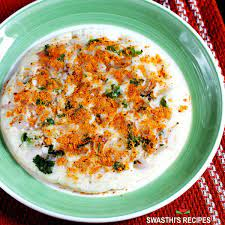

Uttapam Recipe

Ingredients:
- 2 cups Idli Batter or Dosa Batter (homemade or readymade)
- 1 medium Onion, finely chopped (approx. 1/2 cup)
- 1/2 cup finely chopped Capsicum, optional
- 1/3 cup finely chopped Tomato
- 2-3 green chillies, finely chopped
- Oil for shallow frying
- Salt to taste
Steps:
- Prepare the batter at home by following this recipe or buy the readymade batter from the grocery store. Add salt (if not added before fermenting the batter) and water (if needed) in batter; mix well. Batter should be slightly thicker than dosa batter and slightly thinner than idli batter.
- Heat cast iron tava (dosa tawa) or non-stick tawa over medium flame. (for nice golden color, we recommend to use cast iron tawa.) Add few drops of oil on hot tawa and spread it using a halved potato or a halved small onion. This process helps spreading of batter and also prevents it from sticking. Repeat this process before making each uttapam.
- When tawa is ready, pour one laddle batter and spread it in round shape by gently rotating the ladle in clockwise or anti-clockwise direction. make sure that batter spread is slightly thicker than a batter spread for Dosa.
- Sprinkle 1-2 tablespoons finely chopped onion and 1-2 tablespoons finely chopped capsicum over it.
- Sprinkle 1 tablespoon finely chopped tomato and finely chopped green chillies over it. Gently press the veggies with a spatula.
- Drizzle 1-teaspoon oil around the edge.
- Cook for approx.2-3 minutes until bottom surface turns light golden brown. If you are making very thick uttapam, cover it with a lid to speed up the cooking process.
- Flip it gently and cook another side for a minute or until the bottom surface looks cooked.
- Transfer it to a plate. Repeat the process from step-2 to step-8 for remaining batter.
- Serve it hot with coconut chutney or tomato onion chutney.
Return to main page